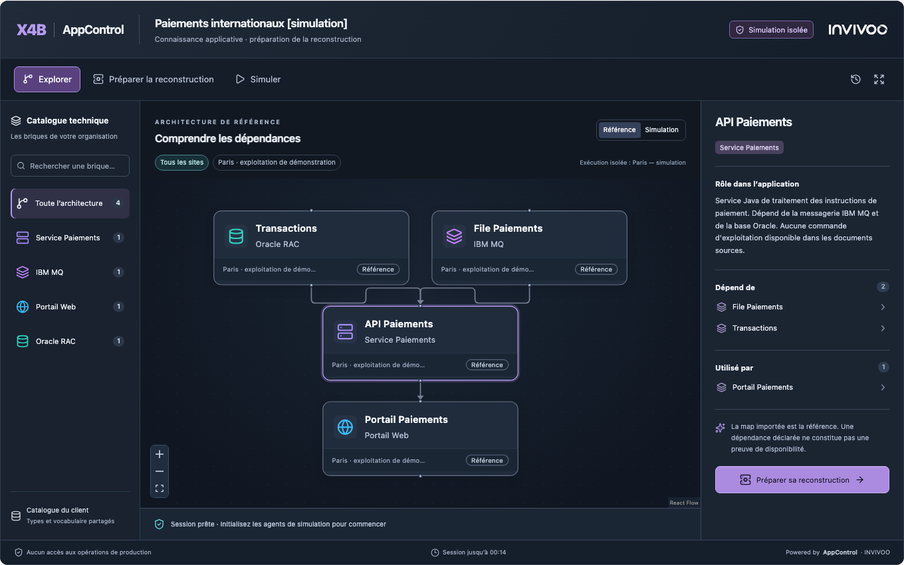

AppControl Embedded — cartographie et reconstruction simulée¶
AppControl Embedded permet d'intégrer une architecture interactive dans une fiche applicative ou un portail documentaire. AppControl conserve le modèle, le rendu, les scénarios, les calculs de dépendances et le runtime. L'hôte accueille le module.

flowchart LR
D[Documents du client] --> IA[IA du client]
P[Prompt et catalogue AppControl] --> IA
IA --> J[Map JSON à valider]
J --> V[Validation et affectation des agents]
V --> M[Map importée dans AppControl]
M --> O[Interface Operations]
M --> S[Copie privée sur agents dédiés]
S --> W[Widget dans la fiche documentaire]Les deux parcours utilisent le même moteur AppControl. La copie du widget possède ses propres identifiants, ses fichiers témoins et ses autorisations.
Le parcours d'intégration¶
- Transformer les configurations de référence du client en catalogue JSON.
- Importer ce catalogue par
POST /api/v1/catalog/component-types/import. - Récupérer
GET /api/v1/map-generation/contract?profile=standard&include_catalog=true.catalog_typespermet de sélectionner les seules briques utiles à l'application. - Le moteur d'IA du client reçoit
system_promptetuser_message_template, dans lequel{{input_documents}}est remplacé par les documents sélectionnés. Un moteur acceptant un message unique peut concaténer ces deux parties. - Valider le résultat par
POST /api/v1/maps/validate. Une erreur bloque l'import. Le client peut renvoyer les diagnostics au modèle pour une correction bornée, conserver les candidats rejetés et revalider ; il ne réécrit pas silencieusement les commandes ni les données de la map. - Préparer les affectations avec
/api/v1/map-generation/prepare, puis importer avec/api/v1/map-generation/import. Le profilstandardconserve les commandes fournies ;mock-linuxest une transformation explicite pour les démonstrations. - Exploiter la map dans
/apps/<id>ou ouvrir son parcours Embedded depuis la map. - Le serveur du portail crée une session limitée pour son utilisateur. Le widget utilise ensuite ses propres API et sa propre copie de simulation.
L'IA reste externe au produit. Les prompts, le contrat et les règles d'import sont fournis par la version d'AppControl installée. Voir MAP_GENERATION.fr.md.
La révision de prompt actuelle est 7. Elle conserve le site documenté dans
source_site et laisse les profils de rattachement absents quand les hôtes
d'exécution sont inconnus. La révision du
prompt, la version de contrat (1) et le format de map (4.2) sont des notions
distinctes. Récupérer le contrat de l'instance cible plutôt que figer son texte.
Alimenter le catalogue du client¶
Le catalogue est celui des types de composants techniques. Chaque brique a une
clé stable type_key, reprise dans component_type des maps. Les commandes sont
facultatives : un catalogue descriptif suffit pour préparer la présentation et
guider la génération. Le catalogue n'infère pas les comportements de reprise d'une
application à partir de son nom ou de son icône.
L'import /api/v1/catalog/component-types/import accepte de 1 à 1 000 entrées.
Toutes les entrées sont validées avant écriture ; les définitions et leur historique
de configuration sont écrits dans une même transaction. Deux modes sont disponibles :
| Mode | Comportement |
|---|---|
add (défaut) |
Crée les nouvelles clés et conserve les entrées déjà présentes. |
upsert |
Crée ou remplace les définitions personnalisées indiquées, après prévisualisation. |
Prévisualiser les changements :
POST /api/v1/catalog/component-types/import
Content-Type: application/json
{
"mode": "upsert",
"dry_run": true,
"entries": [
{
"type_key": "ibm-mq",
"label": "IBM MQ",
"description": "Messagerie applicative",
"icon": "layers",
"color": "#A78BFA",
"category": "Messagerie"
}
]
}
La réponse contient digest, created, updated, unchanged, skipped et les
changes par clé avec leurs champs modifiés. Pour appliquer, envoyer les mêmes
définitions, dry_run: false et expected_digest égal au digest reçu. Un
catalogue modifié entre-temps produit 409 : demander un nouvel aperçu avant
d'appliquer. Les définitions intégrées restent protégées et aucune clé absente
du lot n'est supprimée.
En mode upsert, une entrée est une définition complète : les propriétés
facultatives omises sont effacées ou reçoivent leur valeur par défaut. Par exemple,
omettre default_start_cmd retire cette commande du type personnalisé. Ce n'est
pas la sémantique du PUT partiel historique. Relire le diff avant application.
Une clé de serveur peut recevoir catalog:read pour consulter le catalogue et
l'inclure dans le contrat IA, et catalog:write pour ses mutations. Ces capacités
sont distinctes de maps:import et app:<id>:simulate ; elles ne donnent aucun
droit de démarrage/arrêt. Les mutations du catalogue exigent toujours un
propriétaire de clé administrateur. Aucun mot de passe ni secret d'exécution ne
doit être transmis au modèle avec les définitions.
Une modification du catalogue ne réécrit pas automatiquement les commandes des maps déjà publiées. Regénérer un candidat, comparer et republier explicitement.
Quatre notions à distinguer¶
| Notion | Effet |
|---|---|
| Redémarrage | Arrêt puis relance du runtime ; pas de reconstruction d'installation |
| Reconstruction applicative | Procédure rebuild_cmd, contrôles et démarrage |
| Reconstruction infrastructure et application | rebuild_infra_cmd, reconnexion de l'agent, rebuild_cmd, contrôles et démarrage |
| Bascule | Changement du site actif ; synchronisation et trafic externe nécessitent leur propre contrat |
Le parcours Diagnose & recover présente le site, le périmètre, la stratégie, les prérequis, le plan ordonné et ses résultats. Les opérations quotidiennes sont dans Operations. Le redémarrage avec dépendants est une opération serveur atomique : le navigateur ne coordonne pas lui-même un arrêt suivi d'un démarrage.
Un aperçu dry_run n'est pas une simulation exécutée. L'aperçu de reconstruction
peut exécuter les sondes configurées pour obtenir des preuves fraîches. Le widget
utilise ces mécanismes uniquement sur sa copie isolée.
Configurer les cibles de simulation¶
Enrôler des agents Linux et gateways dédiés, dans des sites autorisés. Aucun composant opérationnel ne doit utiliser ces agents ou leurs gateways.
Configurer le backend :
APPCONTROL_EMBEDDED_ALLOWED_ORIGINS=https://wiki.banque.example
APPCONTROL_EMBEDDED_SIMULATION_TARGETS=[{"site_id":"UUID_SITE","agent_id":"UUID_AGENT","gateway_id":"UUID_GATEWAY"}]
Les origines sont exactes, sans chemin ni wildcard. HTTP est réservé au développement sur loopback. Chaque cible doit correspondre à des identités enrôlées, actives et connectées de la même organisation. Le serveur revalide les autorisations et le chemin d'exécution pendant les scénarios. Une configuration absente désactive l'accès.
Pour ouvrir aussi le widget depuis l'interface native, ajouter l'origine exacte
d'AppControl à cette liste, séparée par une virgule. Par exemple :
https://wiki.banque.example,https://appcontrol.banque.example. La page native
/apps/<id>/embedded propose les environnements éligibles par leur nom ; il
n'est pas nécessaire d'y saisir des UUID. L'API
GET /api/v1/apps/<id>/embedded-options fournit ces choix autorisés au serveur hôte.
Le widget fonctionne avec le même runtime Rust. Les commandes source, variables, commandes natives et procédures du catalogue ne sont pas copiées dans la simulation. AppControl génère ses propres commandes sur des fichiers isolés par session et par composant. Trois états distincts représentent l'environnement, l'installation et le processus. Une panne de processus, une installation endommagée ou une perte simulée d'environnement conduisent ainsi à des reconstructions différentes.
Les états simulés ne prouvent pas la réplication de données, le RTO ou la réussite d'une reprise réelle. Les calculs d'impact concernent les dépendances fortes du modèle ; ils ne remplacent pas les contrôles métier de chaque consommateur.
Helm / OpenShift¶
Les valeurs du chart configurent ensemble l'autorisation backend et l'encadrement HTTP du widget :
Lors d'une mise à jour, terminer d'abord le déploiement de cette version sur toutes les instances backend, puis activer les origines et cibles Embedded. Ne pas créer de copies privées pendant qu'une ancienne instance, qui ne connaît pas leur isolation, reçoit encore des requêtes.
embedded:
allowedOrigins:
- https://wiki.banque.example
simulationTargets:
- site_id: UUID_SITE
agent_id: UUID_AGENT
gateway_id: UUID_GATEWAY
Les pages Operations restent protégées contre l'intégration dans un iframe. Seule
la route documentaire /embedded/<session-id> autorise les origines explicitement
configurées. Pour un reverse proxy personnalisé, reporter cette exception précise
et la CSP frame-ancestors, sans ouvrir l'ensemble d'AppControl à l'encadrement.
Le portail doit aussi autoriser le script et l'iframe AppControl dans sa propre CSP.
Son style-src doit autoriser cette même origine pour charger la feuille externe
/appcontrol-embedded.css, utilisée dans le Shadow DOM du Web Component. Le SDK
n'injecte pas de bloc de style inline et n'exige pas unsafe-inline pour l'hôte.
Les configurations Docker nginx statiques doivent recevoir cette adaptation explicite ;
le simple téléchargement du Web Component ne modifie pas un reverse proxy existant.
Kit PowerShell / OpenShift¶
Dans configuration.json, renseignez embedded.allowed_origins et
embedded.simulation_sites. Le kit résout les identités après l’enrôlement
de l’agent et de la gateway de chaque site dédié, puis configure l’exception
d’encadrement. Exemple complet du kit
Relier les fiches à leur map AppControl¶
Le job de publication reçoit l’identifiant stable de la fiche du portail documentaire, par
exemple PAI-042. Après validation du JSON généré, le job passe cette identité
dans l’enveloppe de POST /api/v1/map-generation/import.
source_reference accompagne les autres champs de la requête d’import. Le
référentiel fournit sa valeur et le modèle génère la topologie. AppControl
associe la référence à l’UUID créé et garantit son unicité dans l’organisation.
L’association devient disponible à la recherche après un import réussi. Pour
une map déjà importée, un gestionnaire autorisé peut associer la même référence
avec PUT /api/v1/apps/<application-id>/source-reference, avec le corps
{"system":"documentation","id":"PAI-042"}. Contrat d’import
Le portail conserve dans sa configuration serveur l’URL AppControl, le système
source documentation et une clé de simulation. Le gabarit de l’onglet
Architecture utilise l’identifiant de la fiche courante. À l’ouverture,
le serveur du portail envoie la requête suivante.
GET /api/v1/embedded/resolve?system=documentation&id=PAI-042
Authorization: ApiKey <cle-du-serveur-hote>
200contientapplication_id. Utilisez cet UUID pour créer la session du widget.404signifie qu’aucune map publiée n’est disponible dans le périmètre de cette clé pour cette référence. Affichez « Aucune map AppControl disponible pour cette fiche ».- Une erreur d’authentification ou de connexion appelle un état indisponible. Le portail peut renouveler sa vérification avant d’ouvrir une session.
AppControl résout la référence à chaque requête. Le portail génère toutes ses fiches avec le même gabarit et utilise l’identifiant de chaque fiche dans son appel au serveur. La copie ponctuelle reste accessible dans le menu de la map avec Copy application ID, et dans Simulate → Intégrer dans un portail documentaire pour le fragment HTML et JavaScript.
Session, authentification et Web Component¶
Le portail garde la clé dans sa configuration serveur. Le compte propriétaire de la clé doit pouvoir consulter la map et son site dans AppControl. Le profil choisi borne ce périmètre. Dans API Keys → Create API Key, utilisez le compte de service du portail pour créer l’un des profils suivants.
| Profil | Périmètre |
|---|---|
| Embedded portal — selected maps | Une liste de maps, chacune avec app:<id>:simulate. |
| Embedded portal — all maps the account can view | simulate sur les maps que le compte de service peut consulter. |
Dans le POC, un portail en mode POC peut être accessible sans authentification. Tous les visiteurs consultent les mêmes fiches et partagent le périmètre de la clé de service. Choisissez Embedded portal — all maps the account can view pour retrouver les maps publiées que ce compte peut consulter. Quand le portail identifiera ses utilisateurs, le portail pourra vérifier leur périmètre applicatif avant chaque résolution et ouverture de session. Le profil Import new application maps sert à la publication.
POST /api/v1/apps/<application-id>/embedded-sessions
Authorization: ApiKey <cle-du-serveur-hote>
Content-Type: application/json
{"parent_origin":"https://wiki.banque.example","simulation_site_id":"UUID_SITE","ttl_seconds":1800}
La réponse contient session_id, token, expires_at, embed_path et
reference_application_id. Le jeton Embedded est opaque, conservé seulement en
mémoire, et ne permet pas d'appeler les API d'exploitation. Il expire au plus tard
après une heure. Un maximum de cinq sessions actives par compte AppControl
émetteur limite les copies simultanées. Si un portail partage une clé de compte
technique, tous ses visiteurs partagent ce quota. Les copies sont réservées à
la simulation.
La capacité simulate est un plafond sur les droits existants, pas un droit de
démarrage, de reconstruction de production ou d'import. Si la clé émettrice est
révoquée ou si son propriétaire perd l'accès à l'application, le jeton Embedded
cesse lui aussi d'autoriser les demandes. Les API Embedded n'acceptent pas les
cookies de l'interface Operations à la place de leur jeton dédié.
<script src="https://appcontrol.banque.example/appcontrol-embedded.js"></script>
<appcontrol-map id="architecture"
backend-url="https://appcontrol.banque.example"
data-source-app-id="PAI-042"
title="Architecture et reconstruction">
</appcontrol-map>
Dans le JavaScript de l'hôte :
await customElements.whenDefined('appcontrol-map');
const widget = document.querySelector('#architecture');
const fiche = encodeURIComponent(widget.dataset.sourceAppId);
const response = await fetch(`/api/fiches/${fiche}/session-appcontrol`, { method: 'POST' });
if (!response.ok) throw new Error('Session indisponible');
widget.session = await response.json();
Le gabarit renseigne data-source-app-id avec l’identifiant de la fiche courante.
L’API /api/fiches/<identifiant>/session-appcontrol appartient au portail. Elle
résout la référence de la fiche, puis crée la session avec la clé de service.
Un portail authentifié peut y appliquer les droits propres à chaque utilisateur.
Le module n'impose ni React ni une dépendance métier au portail documentaire.
Le Web Component encapsule un iframe et transmet le jeton par un handshake
postMessage contrôlant l'origine, la fenêtre et l'identifiant de session. Il ne
stocke le jeton ni dans les attributs, ni dans l'URL, ni dans localStorage.
Événements disponibles : appcontrol:component-selected et
appcontrol:scenario-completed, sans jeton dans leur contenu.
API de session et cycle de vie¶
Avec Authorization: Bearer <token Embedded>, utiliser uniquement les routes de
cette session. Le Web Component renseigne également X-AppControl-Host-Origin :
| Appel | Résultat |
|---|---|
GET /api/v1/embedded/sessions/<id> |
Référence filtrée, états de simulation, catalogue sans commandes et historique. |
POST /api/v1/embedded/sessions/<id>/scenarios |
Lance un scénario ; 202 signifie accepté, pas terminé. Suivre son statut avec GET. |
DELETE /api/v1/embedded/sessions/<id> |
Révoque le jeton et suspend les contrôles de la copie. |
Les scénarios comprennent initialize, component_outage, application_damage,
infrastructure_damage, site_loss, plan, recover et reset. Une
reconstruction exige d'abord plan, puis recover avec le plan_token reçu
dans expected_plan_token. Le serveur revalide le plan avant d'exécuter.
Les identifiants de composants sont ceux de la copie retournée dans map, pas
les UUID des composants de production. La référence et ses commandes restent
inchangées pendant les scénarios.
| Limite | Valeur actuelle |
|---|---|
| Durée demandée | 60 à 3 600 secondes ; 1 800 par défaut |
| Sessions actives | 5 par compte AppControl émetteur, 50 par organisation |
| Quota de sessions conservées récentes | 200 par organisation, comptées avec une expiration postérieure à maintenant moins 24 h |
| Taille de référence | 1 à 100 composants, au plus 500 dépendances |
| Historique | Au plus 100 scénarios par session ; une seule opération à la fois |
Un entretien périodique, environ toutes les 30 secondes, suspend les copies expirées ou révoquées et retire leur configuration des agents. Après 24 heures d'expiration, il supprime les composants privés de simulation s'il n'y a plus d'opération active. Il conserve les enregistrements de session, la référence capturée et les preuves d'exécution ; les journaux append-only ne sont pas purgés par ce mécanisme. Il ne s'agit pas d'une suppression intégrale des fichiers témoins sur les agents ou d'une politique générale de rétention documentaire.
Scénarios et limites de cette version¶
Le widget permet l'exploration, les filtres de catalogue, la préparation de reconstruction, l'initialisation, les pannes de composant ou d'installation, la perte simulée du site d'exécution, le plan et la reconstruction vérifiée. Les résultats proviennent du backend et des agents, avec historique de session.
La référence est capturée à la création de la session. Une modification ultérieure de la map opérationnelle nécessite une nouvelle session pour être prise en compte ; ce widget ne diffuse pas les états de production en direct dans le portail.
Chaque session exécute sur une cible isolée. Une autre cible configurée peut accueillir une session distincte ; cela ne constitue pas encore une bascule inter-sites dans un même scénario. L'édition libre de topologie et la validation humaine de provenance ne sont pas livrées par ce premier incrément. Les capacités renvoyées par l'API évitent d'afficher ces fonctions comme disponibles.
Les sites et associations de la référence peuvent être consultés dans le graphe.
Leur présence ne signifie pas que des commandes s'exécutent sur ces sites :
execution_site identifie séparément l'environnement isolé utilisé. Le scénario
site_loss rend indisponibles les marqueurs de toute cette copie ; il ne
simule pas une perte de Paris laissant une seconde copie Lyon active. Les
applications imbriquées, clusters fan_out et tâches manuelles nécessitent un
modèle Sandbox explicite et sont refusés dans ce premier périmètre.
Dans Operations, la reconstruction d'une machine totalement inaccessible exige encore une procédure explicite de preuve d'absence/isolement depuis un contrôleur survivant. Le parcours existant demande un arrêt vérifié avant reconstruction. Les fichiers de simulation conservent un agent disponible ; ils ne valident pas ce cas d'infrastructure réelle. La phase de bascule ne synchronise pas elle-même les données et ne modifie pas le routage externe.
Démonstration rejouable¶
Le dossier demo-rebuild/embedded fournit deux documents synthétiques, un catalogue, un hôte documentaire et un runtime local avec trois chaînes d'exécution réelles : exploitation de démonstration, Paris simulation et Lyon simulation. Voir son mode d'emploi.